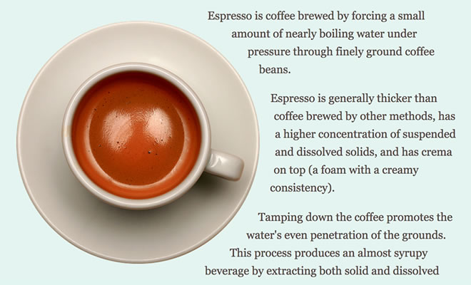

Какво са CSS Shapes?
Замисляли ли сте се как са направени онези хубави форми, които виждате из целия интернет? Не се чудете повече. Попаднали сте на правилното място. CSS е способен да прави всякакви форми. От дълго време уеб дизайнерите са принудени да работят в рамките на првоъгълника. CSS Shapes позволяват на уеб дизайнерите да обогатяват съдържанието си с още много форми, като кръгове, елипси, полигони и още много други фигури, с които ще се запознаем тук. По този начин се освобождаваме от ограниченията на правоъгълника. Някои форми изискват повече „поправки и трикове“ от други. Може би няма да обхванем всички инструменти и форми, но ще получите основна представа за това как се създават фигури с CSS. Ще се запознаем със много интересни форми, както и с начините на създаване - ръчно дефиниране или извадка от изображение. Чрез интелигентност и въображение, чрез позициониране и трансформиране може да обогатим нашия уеб свят.
Форми чрез ръчно създаване
Създаването на фигури с CSS обикновено е комбинация от използване на width, height, top, right, left, border, bottom, transform. Може да се избира от няколко функционални стойности. Всяка функция за фигура приема набор от координати и тя се сдвоява с референтно поле, което установява координатната система. Също така може да се използват ::before и ::after псевдоелементите в CSS, които дават потенциала на още две фигури, които може да се добавят към някой оригинален елемент. Тук ще разгледаме най-често използваните и интересни фигури.
Квадратна форма
Правоъгълна форма
Квадратите и правоъгълниците са може би най-лесните форми за постигане. Вие задавате ширината и височината, както е показано в примернния код. Можете да имате каквито и да са други свойства, които искате за елемента.
Форми чрез border-radius
Функцията border-radius определя радиуса на ъглите на даден елемент. В нея може да има от една до четири граници. Четири стойности за радиус на границата: 15px 50px 30px 5px; (първата стойност се отнася за горния ляв ъгъл, втората стойност се отнася за горния десен ъгъл, третата стойност за долния десен ъгъл и четвъртата стойност за долния ляв ъгъл). За три и две е аналогично да горния пример. Една стойност за граница-радиус: 15px; (стойността се отнася за всичките четири ъгъла, които са закръглени еднакво).
Форма на кръг
Овална форма

За да създадете кръг, задавате радиус на границата на елемента. Това ще създаде извити ъгли на елемента. Ако го зададете на 50%, ще се получи кръг. Ако зададете различна ширина и височина, вместо това ще се получи овал. Стойностите на border-radius за овал, трябва да бъдат половината от ширината и височината, тоест в примера са такива, защото 200/2=100 и 100/2=50.
Форми чрез border и transparent
Форма с нулева ширина и височина. Действителната ширина и височина на тези форми се определя от ширината на границата. Например в триъгълник, който сочи нагоре долната граница е оцветена, докато лявата и дясната са прозрачни, което образува триъгълника. Чрез border може да подадем четирите посоки, като така задаваме граница на ширината в съответната посока, стил и цвят. Чрез transparent остават прозрачни зададените части в формата и така се образува триъгълник.
Форма на триъгълник
Форма на триъгълник(ЛЯВО)
Аналогично можем да обърнем триъгълника на дясната страна и надолу.Можем да направим триъгълници, които сочат почти във всяка посока, която бихме искали.
Триъгълник-горна лява форма
Трапец
Форми чрез transform
Чрез transform завъртаме фигурата. Като може да избираме различни начини: rotate, scale, skew или translate За създаването на успоредник първо създаваме правоъгълник и използваме skew, който приема като аргументи градусите за изкривяване по оста Х и по оста У, ако един от аргументите липсва, то той има нулева стойност.
Успоредник

Форми чрез псевдоелементите before и after
Псевдоелементите са много важни инструменти за създаване на фигури в обикновен CSS, тъй като значително подобряват огромния брой форми, които можете да направите. ::before се използва за да добави форма пред някоя вече създадена. ::after се използва за да добави форма след някоя вече създадена. Използвайки ::before псевдоелемента, можем да направим две различни фигури, които след това да разположим една върху друга. Един от проблемите, които може да забележите с CSS в този пример, обаче, са фините стойности за абсолютно позициониране на тези две части заедно. Също така тези форми изискват писане на много внимателен код.
Интересни форми, създадени от комбинация функции
Чрез тези форми, може да разберете в частност как се прилагат вече разгледаните функции и свойства в някои по-сложни и интересни форми.

Описване на текст около форма
1. Форми чрез изображения
С помощ на CSS извличме форма от изображение. Чрез задаване на прозрачност CSS ни позволява да работим върху самото изображение. Следва да се запознаем с този начин за изпозлване на фигура.

Фигура 1 от източник [4]. Описване на текст около изображение.
Декларацията shape-outside:url() казва на бразуъра да извлече форма от подаденото изображение. Следващата декларация shape-image-threshold:0.5 определя минималното ниво на непрозрачността на пикселите, които ще бъдат използвани за създаване на формата. Стойността му трябва да бъде в диапазона между 0.0(напълно прозрачен) и 1.0(напълно непрозрачен). Елементите имат плаваща площ от противоположната страна на float стойността. Например, ако елемент с изображение на чаша кафе стои вляво, зоната на поплавъка ще бъде създадена вдясно от чашата. Въпреки че можете да проектирате изображение с извивки от двете страни, съдържанието ще се увива само около формата от противоположната страна, посочена от свойството float, ляво или дясно, никога и двете.
2. Форми чрез CSS функции
Текстът може да преформатира върху форма като кръг, елипса или многоъгълник със shape-outside свойството.
2.1 Circle()

Фигура 2 от източник [4]. Текст около кръг.
В горния пример съдържанието ще се увива около външната страна на кръгa. Декларацията shape-outside:circle(50%) указва радиуса на кръга.Промяната на размерите на елемента ще повлияе на радиуса на формата на кръга.
2.2 Elipse()
Фигура 3 от източник [4]. Текст около елипса.
Елипсите приличат на смачкани кръгове.Те се определят като ellipse(rx ry at cx cy), където rx и ry са радиусите на елипсата по оста X и оста Y, докато cx и cy са координатите за центъра на елипсата.
2.3 Polygon()
Фигура 4 от източник [4]. Текст около многоъгълник.
Ако кръговете и елипсите са твърде ограничаващи, функцията с форма на многоъгълник отваря свят от възможности. Форматът е polygon(x1 y1, x2 y2, ...)мястото, където посочвате двойки координати xy за всеки връх (точка) на многоъгълник. Минималният брой двойки за задаване на многоъгълник е три.Върховете се поставят върху координатната система. Mоже да se използват процентни стойности за някои или всички координати.
Справочни полета за CSS Shapes
Фигура 5 от източник [4]. Референтно поле.
Референтното поле е виртуално поле около елемента, което установява координатната система, използвана за изчертаване и позициониране на фигурата. Началото на координатната система е в горния ляв ъгъл с оста X, насочена вдясно, а оста Y, насочена надолу. Не забравяйте, че shape-outside променя формата на поплавъчната област, около която ще се увие съдържанието. Плаващата зона се простира до външните ръбове на полето, дефинирано от marginсвойството. Това се нарича margin-box и това е полето за справка по подразбиране за фигура, ако нито една не е изрично спомената.
Фигура 6 от източник [4]. Референтно поле.
Има няколко опции клетки, от които да избирате: margin-box, border-box, padding-box и content-box. Техните имена предполагат техните граници. По-горе е описан margin-box. border-box е ограничена от външните ръбове на границите на елемента, padding-box е ограничена от облицовка на елемента, докато content-box е идентичен с действителната площ, използвана от съдържанието на един елемент. В даден момент с shape-outside декларация може да се използва само едно поле за справка. Всяко поле за справка ще повлияе на формата по различен и понякога фин начин. Можете да смесвате CSS фигури с много други CSS функции, като преходи и анимации. Трябва да подчертая, че потребителите смятат, че е много досадно, когато оформлението на текста се променя, докато четат.
Заключение
В мрежата, където съдържанието е затворено предимно в прости кутии, CSS Shapes осигуряват начин за създаване на изразително оформление. Разбира се, с форми може да се злоупотребява и да създава разсейване. Но когато се прилагат с вкус и добра преценка, формите могат да подобрят представянето на съдържанието и да фокусират вниманието на потребителя по уникален за тях начин. Едно от хубавите неща на CSS Shapes е, че тъй като те трябва да бъдат приложени към поплавък, те лесно могат да бъдат използвани като прогресивно подобрение за вашия сайт. Браузърите, които не поддържат Shapes, ще покажат плувката, както бихте очаквали, с квадратно поле около елемента. Браузърите, които поддържат Shapes, ще имат формата, която сте посочили.
Източници
[1] Cris Coyier, "The Shapes of CSS" , публикуван 2018-10-01,
[ https://css-tricks.com/the-shapes-of-css/ ] , последно посетен на 19 юни 2020г.
[2] Robin Rendle, "Working with Shapes in Web Design" , публикуван 2015-07-01,
[ https://css-tricks.com/working-with-shapes-in-web-design/ ] , последно посетен на 26 февруари 2018г.
[3] Thomas Weibenfalk, "CSS Shapes Explained: How to Draw a Circle, Triangle, and More Using Pure CSS" , публикуван 2020-02-05,
[ https://www.freecodecamp.org/news/css-shapes-explained-how-to-draw-a-circle-triangle-and-more-using-pure-css/ ]
[4] Razvan Caliman, "Getting Started with CSS Shapes" , публикуван 2014-09-16,
[ https://www.html5rocks.com/en/tutorials/shapes/getting-started/ ] , последно посетен на 17 септември 2014г.